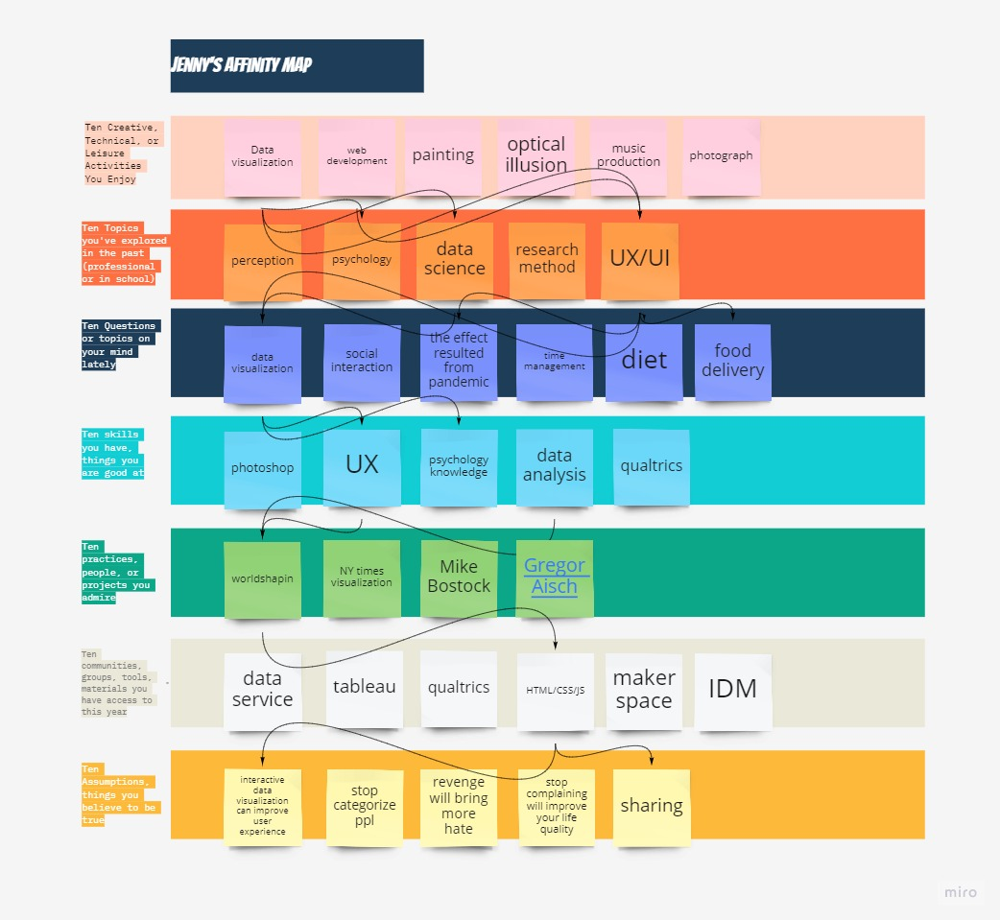
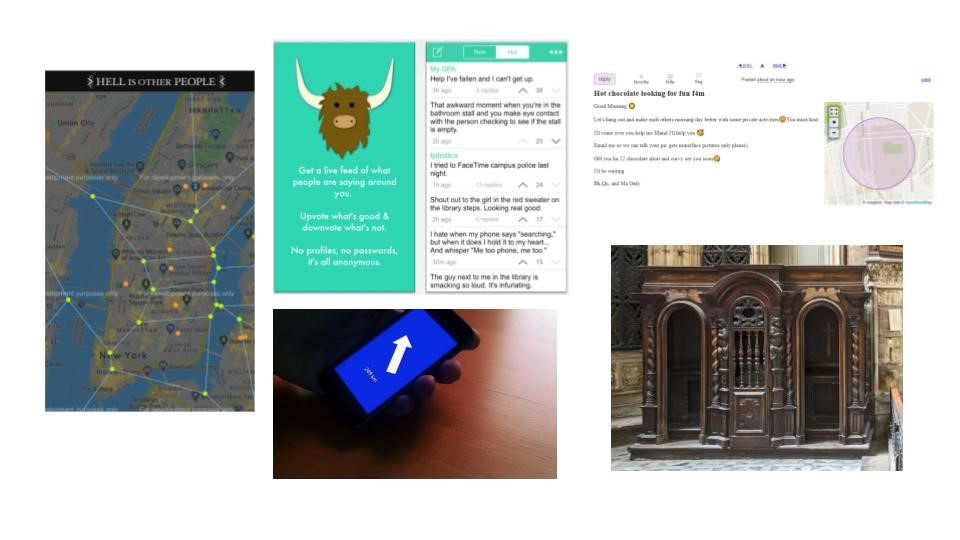

BEANS
Year: 2021
Focus: Research, Ideation, Web Application
Skills: Qualitative research, Front-end development, Usability test
Linkヽ(✿ﾟ▽ﾟ)ノ: https://spillthebeans.glitch.me/
My thesis project, BEANS, is an experimental social platform to let out the unspeakable things in house anonymously. The users are able to send a post on BEANS with their names, lies they told and the corresponding truth. The posts remain on the page for only 24 hours and users can only see certain posts within 8 Km away from the creator. Welcome to check out the website, and spill the beans there!
Research question
Lying is human nature, is a common social strategy to allow a person to establish perceived control over a situation by manipulating it. Deception results in the truth becoming a secret. However, it can be awfully draining since it takes a lot of negative physical and mental energy to maintain a lie. In the meantime, the dependency on social networking surges, which becomes a potential remedy for revealing secrets.
Thus, I wondered how to create a virtual space where people are able to let the cat out of the bag.
Process
Research
Research phases can be divided into 2 parts, primary research and secondary research. I focused on technical issue on primary research and
In-depth user interview
My potential users have to be familiar with digital devices and be experienced in quarantine during the COVID-19 outbreak. I got 4 participants who are students in their 20s. One of them is living with parents, one of them lives alone, and two of them live with roommates. I asked them two main questions: How’s their overall feeling during quarantine at home? Have you ever felt troubled when staying with your family/ partner/ roommate all day?
Key findings
People staying with family or roommates didn’t dislike the lifestyle during the pandemic but sometimes felt troubled for different reasons. Most of them dealt with this problem by distancing one another from time to time, which demonstrates why absence makes the heart grow fonder. Hence, physical distance plays a crucial role in a relationship. A proper interpersonal distance can facilitate the relationship, and I believe it’s the key to the answer for my research question.
Expert interview
Based on the interview, I'd like to emphasize the influence of distance on interpersonal relationship. In the expert interview, I asked professor and specialist some suggestions on how to visulize and measure distance.
Considering the measurement of interpersonal distance, GPS is the best choice for my design because it’s well-developed with many open resources online. To keep the user’s secret confidential, instead of embedding data from developed software I decided to build a web application with a server-side database to avoid data leakage. GPS API, Google Mmap API can be applied in my project for data collection and visualization. ArcGIS can be a reference of UI.
Secondary research
I believe a physical distance should be considered as a key component when designing this project. Based on this idea, it’s worthy to take a closer look on proxemics studies, meanwhile, people’s confession behavior on social media is another point for the project. This research spanned three main areas: proxemics, social media and confession, and case study on Yik Yak. Due to large amount of studies, I list out the key findings below.
Key findings
- Distance influences interpersonal relationships and GPS is a handy tool to measure real-time distance for web applications.
- In terms of the confession behavior on social media, anonymity makes users feel free for being themselves and more willing to disclose, yet it has a risk of misuse.
- In the case of Yik Yak, it illustrates how anonymity and proximity worked in social media like the regional restriction grouped the users to make them feel in-group instead of public, leading to more willingness to disclose information. Also, it reminds me that the responsibility of the developer is crucial. Finally, these studies gave me an insight into how to build a fun, digital project that explores interpersonal relations in the physical world. Project management and monitoring system are key to avoid misuse.
Ideation and Process
1. Topic exploration
It's a long way 💦💦, here's the affinity map to sort out my interests and abilities. To learn more about my ideation journey, please check out my weekly documentation on Medium!
2. Proximity design
Some sketches for proximity design to explore the potential and storytelling format.
3. Features and tools
Adding on my previous research and some great project with GPS and proximity as reference like Hell Is Other People, Yik Yak, After the hoop up...etc, anonymity, ephemeral content and proximity can be three main features on the platform.
Anonymity
Level of discursive anonymity is somewhat related to self-disclosure. If users stay anonymous, they’re more willing to speak the truth and tend to act on their natural disposition and tell the truth.
Ephemeral content
Ephemeral content became a popular app feature in social media these days such as Instagram's story and Snapchat. The mechanism behind its popularity can attribute to the anxiety from fear of missing out. With this feature, this elicits users to express their real-time feelings as well as their hidden emotions.
Proximity
Designing distance can influence users’ interpersonal relationship based on the previous research. With this feature, I created a semi-public space online where users tend to feel like an in-group instead of sharing in public if we restricted the viewers in a limited area. At the same time, the design decision encourages people to leave their homes and move through the city in order to reveal more secrets.
Design and prototype
1. Website wireframe
First page is divided into 4 parts, including title page, instrcution, code of conduct, and the form for post. Once the submits the form, it will turn to the second page, where the posts show and visualization.

2. Low-fi prototype
Mood board. Inspired by most of The Matrix scenes.
3. Final prototype
First page: title page, instruction, code of conduct, form
Second page: post board with Google map
Make it works!
Make sure the host, geolocation, form, dataset work. But you can't say it's a website without UI! So...
2000 years later 🔨 🔧 😣 💦